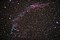
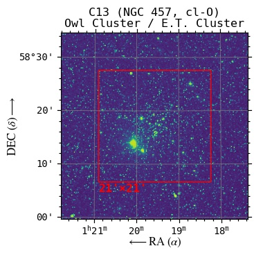
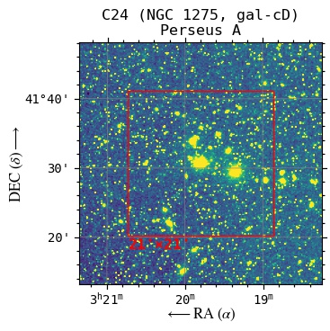

| C9 |
Sh2-155 |
Cave Nebula |
Neb |
7.7 |
344.2746 |
62.6359 |
link |
|
 |
 |
| C27 |
NGC 6888 |
Crescent Nebula |
Neb |
7.4 |
303.0292 |
38.3550 |
link |
|
 |
 |
| C11 |
NGC 7635 |
Bubble Nebula |
Neb |
10 |
350.2013 |
61.2017 |
link |
 |
|
 |
| C20 |
NGC 7000 |
North America Nebula |
Neb |
4 |
314.6958 |
44.3300 |
link |
|
 |
|
| C22 |
NGC 7662 |
Blue Snowball |
Neb-P |
9 |
351.4733 |
42.5350 |
link |
|
 |
 |
| M76 |
NGC 650 & NGC 651 |
Little Dumbbell Nebula |
Neb-P |
10.1 |
25.5819 |
51.5754 |
link |
 |
|
 |
| C6 |
NGC 6543 |
Cat's Eye Nebula |
Neb-P |
9 |
269.6392 |
66.6330 |
link |
 |
 |
 |
| C15 |
NGC 6826 |
Blinking Planetary |
Neb-P |
10 |
296.2006 |
50.5251 |
link |
|
 |
|
| C2 |
NGC 40 |
Bow-Tie Nebula |
Neb-P |
11 |
3.2542 |
72.5220 |
link |
 |
 |
|
| C56 |
NGC 246 |
Skull Nebula |
Neb-P |
8 |
11.7639 |
-11.8719 |
link |
 |
|
 |
| M27 |
NGC 6853 |
Dumbbell Nebula |
Neb-P |
7.5 |
299.9015 |
22.7212 |
link |
 |
 |
 |
| C34 |
NGC 6960 |
West Veil Nebula |
Neb-SN |
7 |
311.4083 |
30.7083 |
link |
 |
 |
|
| C33 |
NGC 6992 |
East Veil Nebula |
Neb-SN |
7 |
314.0792 |
31.7433 |
link |
 |
|
 |
| C13 |
NGC 457 |
Owl Cluster / E.T. Cluster |
cl-O |
6.4 |
19.8958 |
58.2867 |
link |
 |
 |
 |
| M29 |
NGC 6913 |
Cooling Tower |
cl-O |
7.1 |
305.9833 |
38.5233 |
link |
|
|
|
| C14 |
NGC 869 & NGC 884 |
Double Cluster / h & χ Persei |
cl-O |
4 |
34.7500 |
57.1283 |
link |
|
|
|
| C19 |
IC 5146 |
Cocoon Nebula |
cl-O & Neb |
7.2 |
328.3500 |
47.2667 |
link |
|
|
|
| C4 |
NGC 7023 |
Iris Nebula |
cl-O & Neb |
7 |
315.4038 |
68.1633 |
link |
 |
|
 |
| M31 |
NGC 224 |
Andromeda Galaxy |
gal-S |
3.4 |
10.6847 |
41.2687 |
link |
|
 |
 |
| M74 |
NGC 628 |
Phantom Galaxy |
gal-S |
10.0 |
24.1741 |
15.7835 |
link |
 |
 |
 |
| C5 |
IC 342 |
Hidden Galaxy |
gal-S |
9 |
56.7021 |
68.0961 |
link |
|
 |
 |
| C12 |
NGC 6946 |
Fireworks Galaxy |
gal-S |
8.9 |
308.7181 |
60.1537 |
link |
 |
|
 |
| M33 |
NGC 598 |
Triangulum/Pinwheel Galaxy |
gal-S |
5.7 |
23.4621 |
30.6599 |
link |
 |
|
|
| C23 |
NGC 891 |
Silver Sliver Galaxy |
gal-S |
10 |
35.6371 |
42.3483 |
link |
|
 |
|
| C24 |
NGC 1275 |
Perseus A |
gal-cD |
11.6 |
49.9507 |
41.5117 |
link |
|
|
 |
| M32 |
NGC 221 |
Small Andromeda Galaxy |
gal-dE |
8.1 |
10.6743 |
40.8652 |
link |
|
 |
 |